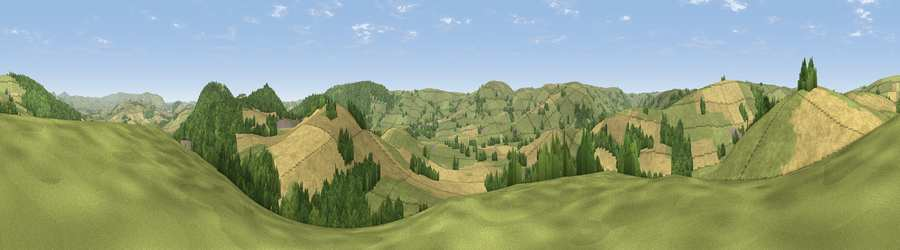

Viewpoint near Clun
#12446 in England · top 36% of its area beats it · near ClunThe view, rendered

A 360° render of this exact spot computed from the terrain model, tree cover and land cover — summer colours, afternoon light, calibrated against photographs of famous viewpoints. Real trees, hedges and buildings will differ in detail.
The panorama
Grey silhouette: terrain skyline in each direction (720 bearings, Earth curvature and refraction included). Dashed green: skyline with trees (+15 m) and buildings (+8 m) as obstacles. Blue strip: how far the ground is visible on each bearing.
Where the view opens
Wedge length = distance to the farthest visible ground on that bearing (vegetation-aware). Rings at 10, 25 and 50 km.
What fills the view
43% grassland · 38% cropland · 18% woodland
Angular shares of the visible panorama (visual magnitude), not map area. Landscape diversity 0.46 (0–1 Shannon).
Key numbers
More beautiful places nearby
The staircase of upgrades: each row has a higher view potential than everything closer. Driving times are estimates from straight-line distance, calibrated against real road routing — check an actual route before setting out.
| Place | Direction | Drive | Score |
|---|---|---|---|
| Stepple Knoll | ESE · 3 km | ~7 min | 72.4 |
| Viewpoint near Brockton | E · 3 km | ~8 min | 74.9 |
| Viewpoint near Bishop's Castle | NNW · 7 km | ~14 min | 75.5 |
| Burrow | E · 9 km | ~17 min | 79.4 |
| Viewpoint near Asterton | ENE · 11 km | ~21 min | 83.0 |
| The Lawley | NE · 24 km | ~40 min | 85.8 |
| Viewpoint near Little Wenlock | NE · 41 km | ~61 min | 86.6 |
| North Hill | SE · 60 km | ~83 min | 86.8 |
52.44557, -3.03905 · source: screening · position refined by local search. Computed location — check access rights before visiting.